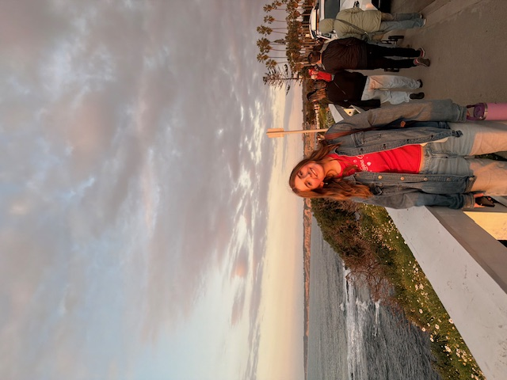
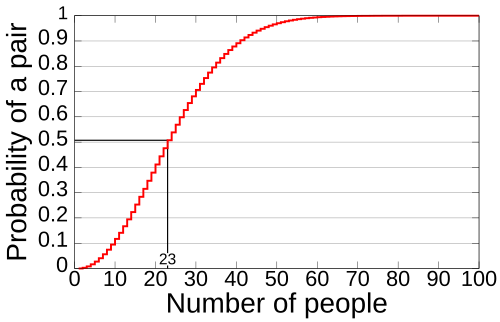

My name is Abigail Callahan and I am currently a junior at the University of San Diego. I am majoring in Computer Science and minoring in Biology. I am interested in several fields of computer science, and I want to pursue a field in medical devices or medical technology. I am from Denver, Colorado, and am excited to show my website to you!
As far as my experience with computer science, I have taken several classes at USD, including Advanced Computational Problem Solving, Engineering Statistics, and Computer Systems. I am currently taking classes related to Computer Networking, Object Oriented Programming, Operating Systems, and Algorithms. I have taken several classes in biology, including Genomes and Evolution, Chemistry, and Genetics. Specific topics about relating computer science and biology that I am interested in include bioinformatics, medical technology, and data science.
In my free time, I enjoy being outside and watching sunsets as well as spending time with my friends and family. Back home, I love to ski and hike in the mountains. In San Diego, I enjoy going to the beach and exploring the city. I also love to travel and have been to several countries in Europe.

The birthday paradox says that if the number of people in a room is more than 23, the probability that two people in the room share a birthday is more than 50%. I wrote a program in Java to simulate this paradox.
In this project, the program starts by creating one experiment for 5 people and then runs 20 trials with 5 people. Each trial has 5 different people with randomly generated birthdays. The program checks if any two people in the trial share a birthday, and if so, it counts that trial as a success. After 20 trials, the program calculates the percentage of trials that were successful and prints that percentage to the user. The program then repeats this process for 10 people, 15 people, and so on until it reaches 100 people. The results show that when there are 23 people in the room, the percentage of trials that were successful is around 50%, which confirms the birthday paradox.
In this project, I worked with a partner to write the program. I was responsible for writing the code for the Birthday Class as well as the Experiment Class. After working through the code with my partner, we both went through the remainder of the project, collaborating on the code and debugging together.
This project was interesting to me because I had heard of the birthday paradox before, but I had never seen a program that simulates it. I thought it was really cool to see the results of the program and how it confirmed the paradox. I also enjoyed working with a partner on this project and collaborating on the code together. Since it was the first project of the semester, it was a great refresher on Java and how to write a program in Java. I learned more about the principles of clean code and how variable and class names really matter to another reader of the code. I also learned how to use GitHub to collaborate on code with a partner, which I hadn't done in a few yearfs. Overall, I really enjoyed this project and I am excited to work on more projects like this in the future!
abigailcallahan@sandiego.edu